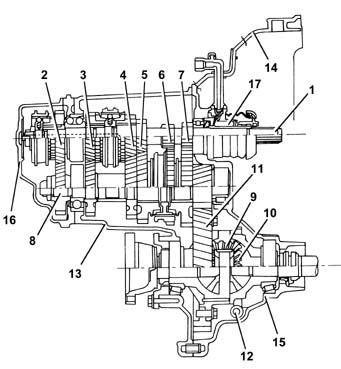
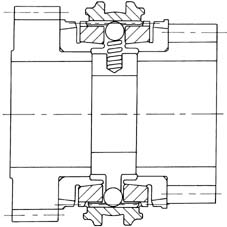
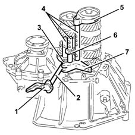
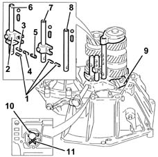
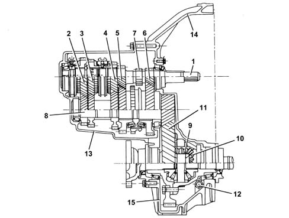
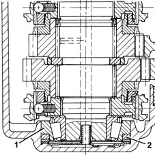
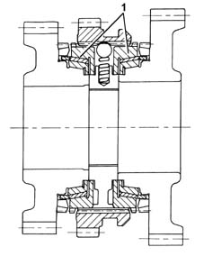
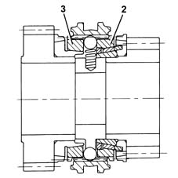
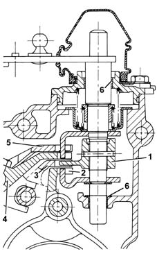
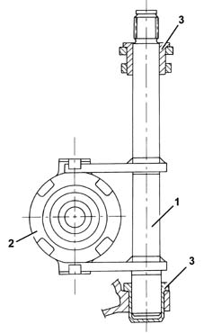

Introduction - MANUAL GEARBOX AND DIFFERENTIAL
- Path
- Descriptions > 21 GEARBOX > 2110 MANUAL GEARBOX AND DIFFERENTIAL > Introduction - MANUAL GEARBOX AND DIFFERENTIAL
- Kind
- system description
- Applies to
- engines: 1.6 TS , 1.8 TS, 2.0 JTS, 2.5 V6, 3.2 V6, 1.9 JTD 8v , 2.0 JTS, 2.4 JTD 10v; all production periods
- Interactive page
- https://sloeber94.github.io/elrnDB-a156/en/#/3239209
Applies to: engines: 1.6 TS , 1.8 TS, 2.0 JTS, 2.0 JTS; all production periods
DESCRIPTION
Gearbox structure
The structure of the gearbox consists of:
- gearbox casing which contains and supports the main and layshafts, rods and gear selector forks and the gear selector and engagement device.
- a rear cover which contains the 5th speed gears, the 5th speed engagement fork and the rear bearing retaining plate for the main and layshafts
- the bell housing which contains the clutch and the coaxial clutch control

1, Main shaft 2, 5 th speed drive gear 3, 4 th speed drive gear 4, 3 rd speed drive gear 5, 2 nd speed drive gear 6, 1 st speed drive gear 7, Reverse speed drive gear 8, Layshaft 9, Planet gears 10, Planet gears 11, Ring gear 12, Mileometer reverse idler gear 13, Gear casing 14, Clutch casing 15, Differential mount casing 16, Gear casing cover 17, Clutch coaxial control device
Main shaft
The main shaft consists of:
- 1st , Reverse and 2nd speed gears
- 3rd , 4th , 5th speed gears, fitted on needle bearings with the synchronizers
3 rd , 4 th and 5 th speed gears fitted on the shaft make it possible to:
- reduce shift loads during synchronisation
- reduce gearbox noise while in neutral.
The main shaft is supported by means of two ball bearings.
The coaxial cluth control device is fitted to the end of the clutch shaft (see 18 T. SPARK)
Layshaft
The layshaft consists of:
- 1st and 2nd speed gears, fitted on needle bearings with synchronizers
- 3rd , 4th and 5th speed gears fitted on the shaft.
The layshaft is supported on:
- a roller bearing at the pinion end
- a ball bearing at the cover end.
Gears
The gears are the following type:
- helical toothed for the forward speeds
- straight toothed for Reverse.
Synchronizers
The synchronizers for all the gears are brass, baulk ring, single-cone "Borg-Warner" type

Gear shift/selection system
The gear shift/selection system consists of:
- a swinging control (1) connected to selector dog (2)
- selector dog (2) which operates sliding rods (4) fitted with synchronisation sleeve control forks (3, 5, 6, 7).

1, Fluctuating control 2, Selector dog 3, 1 st and 2 nd engagement/selector fork 4, Sliding rods 5, 5 th engagement/selector fork 6, 3 rd and 4 th engagement/selector fork 7, Reverse engagement/selector fork
Safety devices
The safety devices consist of:
- three dowels (1) that prevent two speeds being engaged at the same time
- dowel (3), pin (4) and spring (5), which maintain reversing dog (2) in a safe position to prevent dangerous movements of revesing fork (9) with the attendant possibility of engaging reverse.
- Lever (10) and spring (11), which prevent involuntary engagement of revese while changing from 5th to 4th speed.

1, Safety dowels 2, Reverse dog 3, Dowel 4, Pin 5, Spring 6, 5 th and Reverse rod 7, 3 rd and 4 th rod 8, 1 st and 2 nd rod 9, Reverse selector fork 10, Lever 11, Spring
Differential
The differential consists of:
- a crown wheel and pinion reduction
- a differential housing constructed in a single piece which includes the differential and planet gears.
The differential housing is supported by two conical bearings and the ring gear is fixed by bolts.
The drive gear for the speedometer is fitted on the outside of the differential housing.
Applies to: engines: 2.0 JTS, 2.0 JTS; all production periods; only with equipment: Smart gearbox
Applies to: engines: 2.5 V6, 3.2 V6, 1.9 JTD 8v , 2.4 JTD 10v; all production periods
DESCRIPTION
Gearbox structure
The structure of the gearbox consists of:
- a gearbox casing with a "closed end" configuration with the rear cover eliminated. This contains and support the main and layshaft, the gear engagement selector forks and rods and the gear selector/engagement device.
- the bell housing which contains the clutch, the thrust bearing and the control device.

1, Main shaft 2, 5 th speed drive gear 3, 4 th speed drive gear 4, 3 rd speed drive gear 5, 2 nd speed drive gear 6, 1 st speed drive gear 7, Reverse speed drive gear 8, Layshaft 9, Planet gears 10, Planet gears 11, Ring gear 12, Mileometer reverse idler gear 13, Gear casing 14, Clutch casing 15, Differential mount casing
Main shaft
The main shaft consists of:
- 1st, Reverse and 2nd speed gears
- 3rd , 4th , 5th /6th speed gears, fitted on needle bearings with the synchronizers
The main shaft is supported by means of two high precision conical bearings.
The main shaft (1) rear bearing has a Viton seal (2) which compensates for axial thermal expansion of the gearbox casing and the main shaft.
The seal makes it possible to:
- reduce the wear of the synchronizers
- improve the matching of the gears
- reduce the noise from the bearings
- improve the manoeuvrability of the gearbox.

Layshaft
The layshaft consists of:
- 1st and 2nd speed gears, fitted on needle bearings with synchronizers
- 3rd , 4th and 5th /6th speed gears fitted on the shaft.
The layshaft is supported by means of two high precision conical bearings.
Gears
The gears are the following type:
- helical toothed for the forward speeds
- straight toothed for Reverse.
All the gears have been designed with "high cover factor" teeth, i.e. when one of the matching teeth is in contact, the next tooth has already started meshing which has the advantage of:
- reducing transmission irregularities
- reducing operating noise.
The teeth on the gears for 2 nd speed, 5 th speed and the final drive have been "super-finished" after the heat treatment.
Synchronizers
The synchronizers for all the gears are brass, baulk ring "Borg-Warner" of the following type:
- triple cone (1) for 1st and2nd speeds

double cone (2) for 3 rd speed
single cone (3) for 4 th and 5 th /6 th speed
Multiple cone synchronizers make it possible to:
- distribute the lever engagement load over several cones
- facilitate the engagement of the gears.

Gear shift/selection system
There are four selection levels for the gear selection/control system with the gear positioner fitted with a bearing.
The system ensures that it is impossible to accidentally engage Reverse gear as it is on a separate level.
Two bushes (6) with a Permaglide covering have been used to reduce friction at:
- the couplings between the gear selector/engagement control shaft and the gearbox casing
- the couplings for the selector fork rods and the gearbox casing.
The bushes make it possible to:
- achieve improved sliding
- ensure better gear engagement precision.

1, Selector pawl 2, 1 st - 2 nd speed engagement/selector fork 3, 3 rd - 4 th speed engagement/selector fork 4, 5 th - 6 th speed engagement/selector fork 5, Reverse gear engagement/selector fork 6, Permaglide bushes
Differential
The differential consists of:
- a crown wheel and pinion reduction
- a differential housing made from two half casings which include the planet and satellite gears.
The differential housing is supported by two conical bearings and the ring gear is fixed by bolts.
The drive gear for the speedometer is fitted on the outside of the differential housing.
Clutch operation
The clutch control consists of:
- a fork bearing (1) fitted inside the clutch casing
- a thrust bearing (2) fitted on the main shaft
The fork bearing is supported by the Permaglide bushes (3) which make it possible to:
- reduce the force required to operate the clutch pedal
- eliminate the use of grease
- limit the wear of the coupling.

Lubrication
In addition to the "whipping effect", the gears are also lubricated by means of ducts inside the:
- clutch casing and gearbox casing
- 3rd and 4th speed control rod
- main shaft.
The improved lubrication of the ducts makes it possible to:
- improve the efficiency of the lubrication
- reduce the amount of oil used thanks to the lubrication aimed at the main couplings.
The use of ZC 75 S synthetic multi-grade oil ensures improved manoeuvrability at low temperatures.